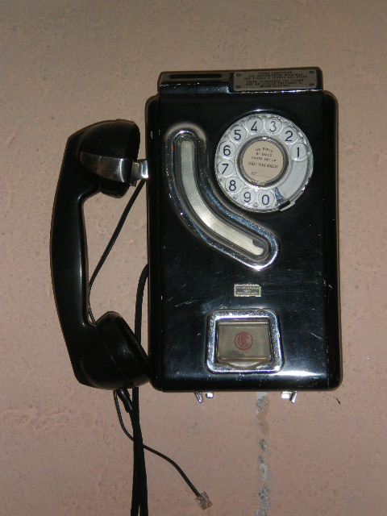

Telefonų remontas | Telefonų taisykla Phonefix.lt
PhoneFix Telefonų remontas: +370 681 62157
Susisiekite
+370 681 62157Vilnius
S.Žukausko g. 1Pirm-Šeštadienį
IV 10:00-18:00 VI 11:00-16:00 Pagrindinis iPhone remontas iPhone 5 remontas iPhone 5C remontas iPhone 5s remontas iPhone SE remontas iPhone 6 remontas iPhone 6 plus remontas iPhone 6s remontas iPhone 6s plus remontas iPhone 7 remontas iPhone 7 plus remontas iPhone 8 remontas iPhone 8 plus remontas iPhone X remontas iPhone XS remontas iPhone XS MAX remontas iPhone XR remontas iPhone 11 remontas iPhone 11 pro remontas Telefonų remontas Samsung Huawei Xiaomi Sony HTC LG Nokia Planšetinių remontas Apple iPad planšetinių remontas Samsung planšetinių remontas Huawei planšetinių remontas Asus planšetinių remontas Lenovo planšetinių remontas Kompiuterių remontas Apple kompiuterių remontas Asus kompiuterių remontas Lenovo kompiuterių remontas Samsung kompiuterių remontas MSI kompiuterių remontas Microsoft kompiuterių remontas Acer kompiuterių remontas Informacija Duomenų atkūrimas Apie Mus D.U.K Kurjerio iškvietimas Kontaktai Gaukite nuolaidąRezervuokite laiką remontui ir gaukite papildomą nuolaidą
Sužinokite telefono remonto kainą - vieno mygtuko paspaudimu
Apple iPhone Xiaomi Samsung Sony Huawei LG HTC OnePlus Nokia KitiiPhone 5
Gedimas Kaina LCD ekrano ir sensorikos (stiklo) keitimas Akcija! 29€ Galinio viršelio keitimas 39€ Baterijos keitimas Akcija! 24€ Krovimo lizdo keitimas Akcija! 20€ Galinės kameros keitimas 16€ Priekinės kameros keitimas 16€ Garsiakalbio keitimas 15€ Ausinių lizdo keitimas 20€ Pagrindinio mygtuko šleifo keitimas 11€ Įjungimo mygtuko keitimas 16€ Garso įjungimo / išjungimo mygtuko keitimas 16€ Garso reguliavimo mygtukų keitimas 16€ iPhone 5 diagnostika NemokamaiPhone 5s
Gedimas Kaina LCD ekrano ir sensorikos (stiklo) keitimas Akcija! 29€ Galinio viršelio keitimas 39€ Baterijos keitimas Akcija! 24€ Krovimo lizdo keitimas Akcija! 24€ Galinės kameros keitimas 21€ Priekinės kameros keitimas 16€ Garsiakalbio keitimas 19€ Ausinių lizdo keitimas 24€ Pagrindinio mygtuko šleifo keitimas 15€ Įjungimo mygtuko keitimas 16€ Garso įjungimo / išjungimo mygtuko keitimas 16€ Garso reguliavimo mygtukų keitimas 16€ iPhone 5s diagnostika NemokamaiPhone 6
Gedimas Kaina LCD ekrano ir sensorikos (stiklo) keitimas Akcija! 39€ Galinio viršelio keitimas 49€ Baterijos keitimas Akcija! 29€ Krovimo lizdo keitimas Akcija! 29€ Galinės kameros keitimas 22€ Priekinės kameros keitimas 22€ Garsiakalbio keitimas 17€ Ausinių lizdo keitimas 29€ Pagrindinio mygtuko šleifo keitimas 19€ Įjungimo mygtuko keitimas 18€ Garso įjungimo / išjungimo mygtuko keitimas 18€ Garso reguliavimo mygtukų keitimas 18€ iPhone 6 diagnostika NemokamaiPhone 6 Plus
Gedimas Kaina LCD ekrano ir sensorikos (stiklo) keitimas Akcija! 45€ Galinio viršelio keitimas 55€ Baterijos keitimas Akcija! 29€ Krovimo lizdo keitimas Akcija! 29€ Galinės kameros keitimas 32€ Priekinės kameros keitimas 24€ Garsiakalbio keitimas 29€ Ausinių lizdo keitimas 29€ Pagrindinio mygtuko šleifo keitimas 24€ Įjungimo mygtuko keitimas 34€ Garso įjungimo / išjungimo mygtuko keitimas 34€ Garso reguliavimo mygtukų keitimas 34€ iPhone 6 plus diagnostika NemokamaiPhone 6s
Gedimas Kaina LCD ekrano ir sensorikos (stiklo) keitimas Akcija! 49€ Galinio viršelio keitimas 69€ Baterijos keitimas Akcija! 29€ Krovimo lizdo keitimas Akcija! 29€ Galinės kameros keitimas 34€ Priekinės kameros keitimas 29€ Garsiakalbio keitimas 27€ Ausinių lizdo keitimas 29€ Pagrindinio mygtuko šleifo keitimas 25€ Įjungimo mygtuko keitimas 29€ Garso įjungimo / išjungimo mygtuko keitimas 29€ Garso reguliavimo mygtukų keitimas 29€ iPhone 6s diagnostika NemokamaiPhone 6s Plus
Gedimas Kaina LCD ekrano ir sensorikos (stiklo) keitimas Akcija! 55€ Galinio viršelio keitimas 59€ Baterijos keitimas Akcija! 34€ Krovimo lizdo keitimas Akcija! 34€ Galinės kameros keitimas 34€ Priekinės kameros keitimas 44€ Garsiakalbio keitimas 29€ Ausinių lizdo keitimas 34€ Pagrindinio mygtuko šleifo keitimas 25€ Įjungimo mygtuko keitimas 34€ Garso įjungimo / išjungimo mygtuko keitimas 34€ Garso reguliavimo mygtukų keitimas 34€ iPhone 6s plus diagnostika nemokamaiPhone 7
Gedimas Kaina LCD ekrano ir sensorikos (stiklo) keitimas Akcija! 55€ Galinio viršelio keitimas 45€ Baterijos keitimas Akcija! 35€ Krovimo lizdo keitimas Akcija! 39€ Galinės kameros keitimas 49€ Priekinės kameros keitimas 39€ Garsiakalbio keitimas 34€ Ausinių lizdo keitimas 39€ Įjungimo mygtuko keitimas 37€ Garso įjungimo / išjungimo mygtuko keitimas 45€ Garso reguliavimo mygtukų keitimas 45€ iPhone 7 diagnostika NemokamaiPhone 7 Plus
Gedimas Kaina LCD ekrano ir sensorikos (stiklo) keitimas Akcija! 65€ Galinio dangtelio keitimas 79€ Baterijos keitimas Akcija! 39€ Krovimo lizdo keitimas Akcija! 39€ Galinės kameros keitimas 49€ Priekinės kameros keitimas 39€ Garsiakalbio keitimas 34€ Ausinių lizdo keitimas 39€ Pagrindinio mygtuko šleifo keitimas Nuo 35€ Įjungimo mygtuko keitimas 37€ Garso įjungimo / išjungimo mygtuko keitimas 37€ Garso reguliavimo mygtukų keitimas 37€ iPhone 7 plus diagnostika NemokamaiPhone 8
Gedimas Kaina LCD ekrano ir sensorikos (stiklo) keitimas Akcija! 60€ Galinės nugarėlės keitimas 79€ Baterijos keitimas Akcija! 39€ Krovimo lizdo keitimas Akcija! 45€ Galinės kameros keitimas 69€ Priekinės kameros keitimas 49€ Garsiakalbio keitimas 39€ Ausinių lizdo keitimas 45€ Pagrindinio mygtuko šleifo keitimas Nuo 35€ Įjungimo mygtuko keitimas 44€ Garso įjungimo / išjungimo mygtuko keitimas 44€ Garso reguliavimo mygtukų keitimas 44€ iPhone 8 diagnostika NemokamaiPhone 8 Plus
Gedimas Kaina LCD ekrano ir sensorikos (stiklo) keitimas Akcija! 65€ Galinio stikliuko keitimas 79€ Baterijos keitimas Akcija! 39€ Krovimo lizdo keitimas Akcija! 45€ Galinės kameros keitimas 65€ Priekinės kameros keitimas 49€ Garsiakalbio keitimas 39€ Ausinių lizdo keitimas 45€ Pagrindinio mygtuko šleifo keitimas Nuo 35€ Įjungimo mygtuko keitimas 44€ Garso įjungimo / išjungimo mygtuko keitimas 44€ Garso reguliavimo mygtukų keitimas 44€iPhone X
Gedimas Kaina iPhone X lietimui jautraus stikliuko keitimas Akcija! 125€ iPhone X ekrano keitimas Akcija! 145€ Galinio viršelio keitimas 90€ Baterijos keitimas Akcija! Teirautis Krovimo lizdo keitimas Akcija! Teirautis Diagnostika NemokamaiPhone XR
Gedimas Kaina LCD ekrano ir sensorikos (stiklo) keitimas Akcija! 145€ Galinio viršelio keitimas 79€ Baterijos keitimas Prašome teirautis. Krovimo lizdo keitimas Prašome teirautis. Galinės kameros keitimas Prašome teirautis. Priekinės kameros keitimas Prašome teirautis. Garsiakalbio keitimas Prašome teirautis. Ausinių lizdo keitimas Prašome teirautis. Pagrindinio mygtuko šleifo keitimas Prašome teirautis. Įjungimo mygtuko keitimas Prašome teirautis. Garso įjungimo / išjungimo mygtuko keitimas Prašome teirautis. Garso reguliavimo mygtukų keitimas Prašome teirautis. iPhone XR diagnostika NemokamaiPhone XS
Gedimas Kaina Galinio dangtelio keitimas Akcija! 125€ Ekrano keitimas Akcija! Prašome teirautis.iPhone 11
Gedimas Kaina iPhone 11 lietimui jautraus stikliuko Prašome teirautis. iPhone 11 ekrano keitimas Prašome teirautis. Galinio viršelio keitimas Prašome teirautis. Baterijos keitimas Prašome teirautis. Krovimo lizdo keitimas Prašome teirautis. Diagnostika NemokamaiPhone 11 Pro
Gedimas Kaina iPhone 11 Pro lietimui jautraus stikliuko Prašome teirautis. iPhone 11 ekrano keitimas Prašome teirautis. Galinio viršelio keitimas Prašome teirautis. Baterijos keitimas Prašome teirautis. Krovimo lizdo keitimas Prašome teirautis. Diagnostika NemokamaXiaomi - Ekranų keitimo kainos
Telefono modelis Kaina Xiaomi Redmi Note 3 Pro ekrano keitimas 49€ Xiaomi Redmi 3S ekrano keitimas 45€ Xiaomi Redmi 4 ekrano keitimas 44€ Xiaomi Redmi 4A ekrano keitimas 44€ Xiaomi Redmi 4X ekrano keitimas 44€ Xiaomi Redmi Note 4 ekrano keitimas 44€ Xiaomi Redmi Note 4x ekrano keitimas 44€ Xiaomi Redmi 5 ekrano keitimas 49€ Xiaomi Redmi 5A ekrano keitimas 49€ Xiaomi Redmi 5 Plus ekrano keitimas 49€ Xiaomi Redmi Note 5 ekrano keitimas 49€ Xiaomi Redmi Note 5A ekrano keitimas 49€ Xiaomi Redmi Note 5A Prime ekrano keitimas 49€ Xiaomi Mi A1 ekrano keitimas 59€ Xiaomi Mi A2 ekrano keitimas 65€ Xiaomi Mi A2 Lite ekrano keitimas 65€ Xiaomi Mi 6 ekrano keitimas 65€ Diagnostika NemokamaXiaomi - Kiti remonto darbai
Remonto pavadinimas Kaina Krovimo lizdo keitimas Nuo 14€ Baterijos keitimas Nuo 22€ Garsiakalbio keitimas Nuo 19€ Priekinės kameros keitimas Nuo 34€ Galinės kameros keitimas Nuo 24€ Garso/įjungimo mygtukų keitimas Nuo 17€ Drėgmės šalinimas Nuo 15€ Duomenų atstatymas Nuo 34€ Ryšio antenų remontas Nuo 24€ Diagnostika NemokamaSamsung - Stikliukų keitimo kainos
Telefono modelis Kaina Samsung A3 2015 stikliuko keitimas Akcija! 55€ Samsung A3 2016 stikliuko keitimas Akcija! 65€ Samsung A5 2015 stikliuko keitimas Akcija! 55€ Samsung A5 2016 stikliuko keitimas Akcija! 65€ Samsung A7 2016 stikliuko keitimas 59€ Samsung J3 2016 stikliuko keitimas Akcija! 39€ Samsung J3 2017 stikliuko keitimas Akcija! 69€ Samsung J5 2015 stikliuko keitimas Akcija! 55€ Samsung J5 2016 stikliuko keitimas Akcija! 59€ Samsung J5 2017 stikliuko keitimas Akcija! 59€ Samsung J7 2015 stikliuko keitimas Akcija! 59€ Samsung J7 2016 stikliuko keitimas Akcija! 65€ Samsung J7 2017 stikliuko keitimas Akcija! 65€ Samsung Note 2 stikliuko keitimas 45€ Samsung Note 3 stikliuko keitimas 55€ Samsung Note 4 stikliuko keitimas 65€ Samsung S4 stikliuko keitimas 38€ Samsung S5 Neo stikliuko keitimas 55€ Samsung S6 Edge plus stikliuko keitimas Akcija! 105€ Samsung S6 Edge stikliuko keitimas Akcija! 105€ Samsung S6 stikliuko keitimas Akcija! 65€ Samsung S7 Edge stikliuko keitimas Akcija! 115€ Samsung S7 stikliuko keitimas Akcija! 72€ Samsung S8 Plus stikliuko keitimas Akcija! 139€ Samsung S8 stikliuko keitimas Akcija! 125€ Samsung S9 Plus stikliuko keitimas Akcija! 169€ Samsung S9 stikliuko keitimas Akcija! 165€ Kitų modelių stikliukų keitimas nuo 25€Samsung - Ekranų keitimo kainos
Telefono modelis Kaina Samsung A3 2015 stikliuko keitimas Akcija! 40€ Samsung A3 2016 stikliuko keitimas Akcija! 49€ Samsung A5 2015 stikliuko keitimas Akcija! 40€ Samsung A5 2016 stikliuko keitimas Akcija! 60€ Samsung A7 2016 stikliuko keitimas 60€ Samsung J3 2016 stikliuko keitimas Akcija! 35€ Samsung J3 2017 stikliuko keitimas Akcija! 45€ Samsung J5 2015 stikliuko keitimas Akcija! 40€ Samsung J5 2016 stikliuko keitimas Akcija! 45€ Samsung J5 2017 stikliuko keitimas Akcija! 45€ Samsung J7 2015 stikliuko keitimas Akcija! 45€ Samsung J7 2016 stikliuko keitimas Akcija! 50€ Samsung J7 2017 stikliuko keitimas Akcija! 45€ Samsung Note 2 stikliuko keitimas 39€ Samsung Note 3 stikliuko keitimas 49€ Samsung Note 4 stikliuko keitimas 58€ Samsung S4 stikliuko keitimas 38€ Samsung S4 stikliuko keitimas 49€ Samsung S4 stikliuko keitimas Akcija! 45€ Samsung S6 Edge plus stikliuko keitimas Akcija! 125€ Samsung S6 Edge plus stikliuko keitimas Akcija! 105€ Samsung S6 stikliuko keitimas Akcija! 65€ Samsung S7 Edge stikliuko keitimas Akcija! 129€ Samsung S7 stikliuko keitimas Akcija! 72€ Samsung S8 Plus stikliuko keitimas Akcija! 155€ Samsung S8 stikliuko keitimas Akcija! 155€ Samsung S9 Plus stikliuko keitimas Akcija! 169€ Samsung S9 Plus stikliuko keitimas Akcija! 165€ Kitų modelių stikliukų keitimas nuo 25€Samsung - Kiti remonto darbai
Remonto pavadinimas Kaina Krovimo lizdo keitimas Nuo 14€ Baterijos keitimas Nuo 22€ Garsiakalbio keitimas Nuo 19€ Priekinės kameros keitimas Nuo 34€ Galinės kameros keitimas Nuo 24€ Garso/įjungimo mygtukų keitimas Nuo 17€ Drėgmės šalinimas Nuo 15€ Duomenų atstatymas Nuo 34€ Ryšio antenų remontas Nuo 24€ Diagnostika NemokamaSony - Ekranų keitimo kainos
Telefono modelis Kaina Sony Z Ultra ekrano keitimas 75€ Sony Z1 ekrano keitimas 59€ Sony Z1 compact ekrano keitimas 65€ Sony Z2 ekrano keitimas 69€ Sony Z3 ekrano keitimas 69€ Sony Z3 compact ekrano keitimas 69€ Sony Z4 ekrano keitimas 75€ Sony Z5 ekrano keitimas 85€ Sony Z5 compact ekrano keitimas 85€ Sony Z5 Premium ekrano keitimas 85€ Sony M4 Aqua ekrano keitimas 55€ Sony X ekrano keitimas 89€ Sony X compact ekrano keitimas 89€ Sony XA ekrano keitimas 70€ Sony XA1 ekrano keitimas 79€ Sony XZ ekrano keitimas 89€ Sony ZR ekrano keitimas 75€ Diagnostika NemokamaSony - Kiti remonto darbai
Remonto pavadinimas Kaina Krovimo lizdo keitimas Nuo 14€ Baterijos keitimas Nuo 22€ Garsiakalbio keitimas Nuo 19€ Priekinės kameros keitimas Nuo 34€ Galinės kameros keitimas Nuo 24€ Garso/įjungimo mygtukų keitimas Nuo 17€ Drėgmės šalinimas Nuo 15€ Duomenų atstatymas Nuo 34€ Ryšio antenų remontas Nuo 24€ Diagnostika NemokamaHuawei P serijos ekranų keitimo kainos (žiūrėti čia)
Telefono modelis Kaina Huawei Nova ekrano keitimas 64€ Huawei P8 ekrano keitimas 49€ Huawei P8 Lite ekrano keitimas 49€ Huawei P9 ekrano keitimas 55€ Huawei P9 Lite ekrano keitimas 49€ Huawei P9 lite mini ekrano keitimas 55€ Huawei P9 Lite 2017 ekrano keitimas 59€ Huawei P10 ekrano keitimas 69€ Huawei P10 Lite ekrano keitimas 59€ Huawei P10 Plus ekrano keitimas 95€ Huawei P20 ekrano keitimas 89€ Huawei P20 Lite ekrano keitimas 69€ Huawei P Smart ekrano keitimas 59€ Diagnostika NemokamaHuawei Mate serijos ekranų keitimo kainos (žiūrėti čia)
Remonto pavadinimas Kaina Huawei Mate 7 ekrano keitimas 59€ Huawei Mate 8 ekrano keitimas 59€ Huawei Mate 9 ekrano keitimas 64€ Huawei Mate 10 ekrano keitimas Teirautis Huawei Mate 10 Lite ekrano keitimas 59€ Huawei Mate 20 Lite ekrano keitimas 69€ Huawei Mate S ekrano keitimas Teirautis Diagnostika NemokamaHuawei Honor serijos ekranų keitimo kainos (žiūrėti čia)
Remonto pavadinimas Kaina Huawei Honor 5x ekrano keitimas 55€ Huawei Honor 7 ekrano keitimas 55€ Huawei Honor 7 Lite ekrano keitimas 55€ Huawei Honor 8 ekrano keitimas 59€ Huawei Honor 8 Lite ekrano keitimas 55€ Huawei Honor 9 ekrano keitimas 64€ Huawei Honor 9 lite ekrano keitimas 59€ Diagnostika NemokamaHuawei - Kiti remonto darbai (žiūrėti čia)
Remonto pavadinimas Kaina Krovimo lizdo keitimas Nuo 14€ Baterijos keitimas Nuo 22€ Garsiakalbio keitimas Nuo 19€ Priekinės kameros keitimas Nuo 34€ Galinės kameros keitimas Nuo 24€ Garso/įjungimo mygtukų keitimas Nuo 17€ Drėgmės šalinimas Nuo 15€ Duomenų atstatymas Nuo 34€ Ryšio antenų remontas Nuo 24€ Diagnostika NemokamaLG - Ekranų keitimo kainos
Telefono modelis Kaina LG G2 ekrano keitimas 72€ LG G3 ekrano keitimas 85€ LG G4 ekrano keitimas 99€ LG G5 ekrano keitimas 135€ LG Nexus 5 ekrano keitimas 74€ LG Nexus 5 ekrano keitimas 74€ LG Nexus 5x ekrano keitimas 85€LG - Kiti remonto darbai
Remonto pavadinimas Kaina Krovimo lizdo keitimas Nuo 14€ Baterijos keitimas Nuo 22€ Garsiakalbio keitimas Nuo 19€ Priekinės kameros keitimas Nuo 34€ Galinės kameros keitimas Nuo 24€ Garso/įjungimo mygtukų keitimas Nuo 17€ Drėgmės šalinimas Nuo 15€ Duomenų atstatymas Nuo 34€ Ryšio antenų remontas Nuo 24€ Diagnostika NemokamaHTC - Ekranų keitimo kainos
Gedimas Kaina HTC M7 Ekrano keitimas Akcija! 69€ HTC M8 Ekrano keitimas Akcija! 79€ HTC M9 Ekrano keitimas Akcija! 89€ HTC telefonų diagnostika NemokamaHTC - Kiti remonto darbai
Remonto pavadinimas Kaina Krovimo lizdo keitimas Nuo 14€ Baterijos keitimas Nuo 22€ Garsiakalbio keitimas Nuo 19€ Priekinės kameros keitimas Nuo 34€ Galinės kameros keitimas Nuo 24€ Garso/įjungimo mygtukų keitimas Nuo 17€ Drėgmės šalinimas Nuo 15€ Duomenų atstatymas Nuo 34€ Ryšio antenų remontas Nuo 24€ Diagnostika NemokamaOneplus - Ekranų keitimo kainos
Telefono modelis Kaina Samsung NOTE 34€ Samsung NOTE 2 39€ Samsung NOTE 3 24€ Samsung NOTE 4 24€ Samsung S2 21€ Samsung S3 16€ Samsung S4 19€ Samsung S5 24€ Samsung S6 15€ Samsung S7 16€ Samsung S7 16€ Samsung S7 16€ Samsung S7 16€ Samsung S7 16€ Samsung S7 16€ Samsung S7 16€Oneplus - Kiti remonto darbai
Remonto pavadinimas Kaina Krovimo lizdo keitimas Nuo 14€ Baterijos keitimas Nuo 22€ Garsiakalbio keitimas Nuo 19€ Priekinės kameros keitimas Nuo 34€ Galinės kameros keitimas Nuo 24€ Garso/įjungimo mygtukų keitimas Nuo 17€ Drėgmės šalinimas Nuo 15€ Duomenų atstatymas Nuo 34€ Ryšio antenų remontas Nuo 24€ Diagnostika NemokamaNokia - Ekranų keitimo kainos (žiūrėti čia)
Telefono modelis Kaina Nokia 5 ekrano keitimas Akcija! 75€ Nokia 6 ekrano keitimas Akcija! 85€ Nokia Lumia 1320 ekrano keitimas Akcija! 77€ Nokia Lumia 1520 ekrano keitimas Akcija! 97€ Nokia Lumia 530 ekrano keitimas Akcija! 63€ Nokia Lumia 820 ekrano keitimas Akcija! 79€ Nokia Lumia 830 ekrano keitimas Akcija! 97€ Diagnostika NemokamaNokia - Kiti remonto darbai (žiūrėti čia)
Remonto pavadinimas Kaina Krovimo lizdo keitimas Nuo 14€ Baterijos keitimas Nuo 22€ Garsiakalbio keitimas Nuo 19€ Priekinės kameros keitimas Nuo 34€ Galinės kameros keitimas Nuo 24€ Garso/įjungimo mygtukų keitimas Nuo 17€ Drėgmės šalinimas Nuo 15€ Duomenų atstatymas Nuo 34€ Ryšio antenų remontas Nuo 24€ Diagnostika Nemokama Empty tab. Edit page to add content here.Kodėl verta rinktis mus
Jūs mums svarbus
Labai vertiname savo klientus. Visada dedame visas pastangas, kad džiaugtumėtes paslaugomis ir aptarnavimu.
Read MoreEsame profesionalai
Nuolatiniai mokymai ir kvalifikacijos kėlimas mums itin svarbus, kad galėtume atlikti net ir sudėtingiausius remonto darbus.
Read MoreDirbame greitai
Žinome, kiek problemų sukelia sugedęs įrenginys. Dažniausiai remonto darbus atliekame per 1 valandą.
Read MoreSuteikiame garantiją
Naudojame tik kokybiškas dalis ir medžiagas. Visiems darbams suteikiame mažiausiai 3 mėnesių garantiją.
Read MorePakaitinis nemokamai
Naudojame tik kokybiškas dalis ir medžiagas. Visiems darbams suteikiame mažiausiai 3 mėnesių garantiją.
Read MoreIšsikvieskite kurjerį
Saugus apmokėjimas
Apmokėsite už atliktą remontą tik gavę jau sutvarkytą įrenginį.
Tai labai paprasta
Jums nereikės spausdinti jokių siuntos lipdukų ar kitų dokumentų, viskuo pasirūpins įrenginio atvykęs paimti kurjeris.
Greitas remontas
Šiais laikais logistika itin išvystyta. Vidutinė trukmė nuo sugedusio įrenginio paėmimo iki atidavimo 3 darbo dienos.
Visoje Lietuvoje
Džiaugiamės turėdami logistikos partnerius DPD. Kiekvieną dieną padedame savo klientams visoje Lietuvoje.
Paslauga NEMOKAMAI
Jeigu nutarsite įrenginį remontuoti mūsų servise, kurjerio paslauga Jums visiškai nekainuos.
Greitas paėmimas
Užpildžius kurjerio iškvietimo formą, galėsite rinktis kada paimti Jūsų įrenginį. Greičiausias paėmimo laikas jau rytoj!
Greitas remontas
Šiais laikais logistika itin išvystyta. Vidutinė trukmė nuo sugedusio įrenginio paėmimo iki atidavimo 3 darbo dienos.
Saugus apmokėjimas
Apmokėsite už atliktą remontą tik gavę jau sutvarkytą įrenginį.
Kurjerio rezervacija
Jūs gerose rankose. Mumis jau pasitiki.
Esame pasiruošę padėti ir Jums. Susisiekite dėl geriausio pasiūlymo!
Apie mus
PhoneFix - Jūsų telefonų ir kompiuterių remonto centras. Mūsų komandoje: skirtingų gamintojų technologijas išmanantys specializuoti technikai, galintys atlikti visus remonto darbus: nuo kasdieninio įrenginių valymo iki sudėtingiausių motininių plokščių remonto. Remontuodami telefonus ir kompiuterius naudojame tik aukščiausios kokybės dalis, kurias nuodugniai tikriname - remontui suteikiame mažiausiai 3-jų mėnesių garantiją. DaugiauNaudingos nuorodos
iPhone remontas Samsung remontas Xiaomi remontas Sony remontas HTC remontas LG remontas Nokia remontas Kompiuterių remontas Apie mus Kontaktai D.U.KKontaktai
Vilnius, S.Žukausko g. 1
info@phonefix.lt
+370 681 62157
Pirm-Šeštadienį
I-V 10:00-18:00
VI 11:00-16:00
Klauskite mūsų
© 2019 PhoneFix.lt